汇编指令的执行过程
1 8086的寻址方式
CPU访问内存单元时，要给出内存单元的地址，所有的内存单元都有唯一的地址，叫做物理地址
8086有20位地址总线，可以传送20位的地址，1M的寻址能力
但它又是16位结构的CPU，它内部能够一次性处理、传输、暂时存储的地址为16位。如果将地址从内部简单地发出，那么它只能送出16位的地址，表现出来的寻址能力只有64KB
8086采用一种在内部用2个16位地址合成的方法来生成1个20位的物理地址


2 内存分段管理
8086是用“基础地址（段地址×16） + 偏移地址 = 物理地址”的方式给出物理地址
为了开发方便，我们可以采取分段的方法来管理内存，比如：
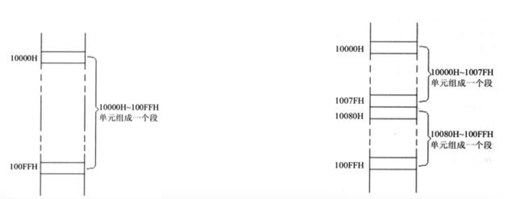
地址10000H~100FFH的内存单元组成一个段，该段的起始地址（基础地址）为10000H，段地址为1000H，大小为100H
地址10000H1007FH、10080H100FFH的内存单元组成2个段，它们的起始地址（基础地址）为：10000H和10080H，段地址为1000H和1008H，大小都为80H
在编程时可以根据需要，将若干连续地址的内存单元看做一个段，用段地址×16定为段的起始地址（基础地址），用偏移地址定位段中的内存单元
段地址×16必然是16的倍数，所以一个段的起始地址（基础地址）也一定是16的倍数
偏移地址为16位，16位地址的寻址能力为64KB，所以一个段的长度最大为64KB

3 段寄存器
8086在访问内存时要由相关部件提供内存单元的段地址和偏移地址，送入地址加法器合成物理地址
是什么部件提供段地址？段地址在8086的段寄存器中存放
8086有4个段寄存器：CS、DS、SS、ES，当CPU需要访问内存时由这4个段寄存器提供内存单元的段地址
CS (Code Segment)：代码段寄存器
DS (Data Segment)：数据段寄存器
SS (Stack Segment)：堆栈段寄存器
ES (Extra Segment)：附加段寄存器
4 CS和IP
CS为代码段寄存器，IP为指令指针寄存器，它们指示了CPU当前要读取指令的地址
任意时刻，8086CPU都会将CS:IP指向的指令作为下一条需要取出执行的指令

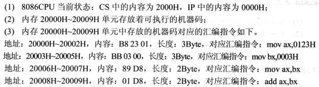
5 指令的执行过程

12

13

14
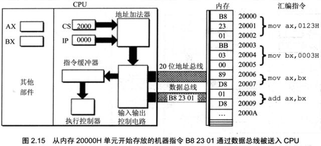
15
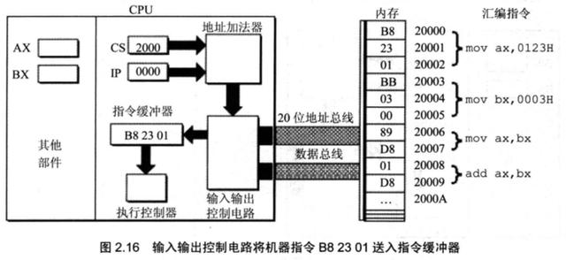
16
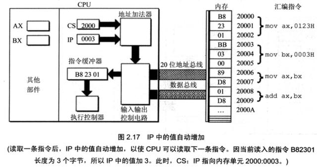
17
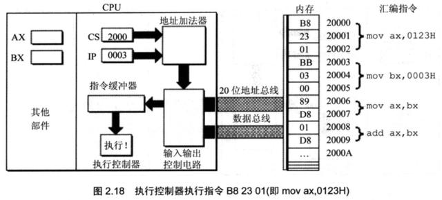
18
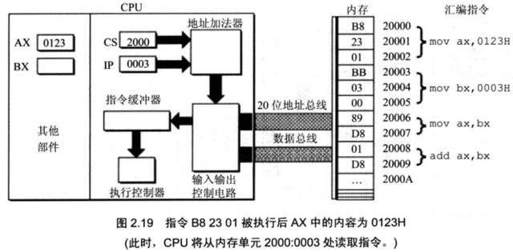
19
21

22
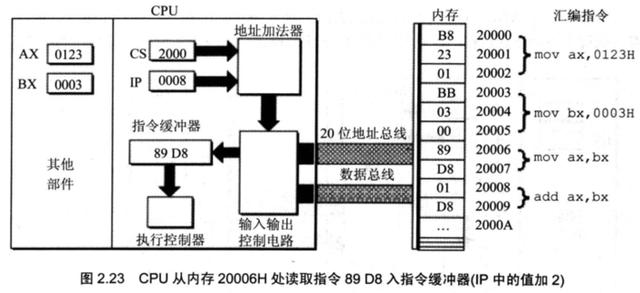
23
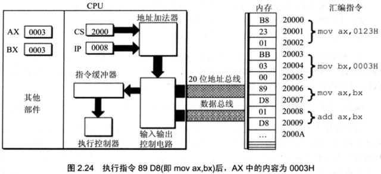
24
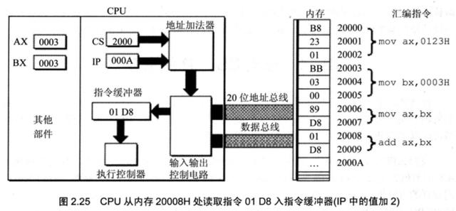
25

26

6 指令和数据
在内存或者磁盘上，指令和数据没有任何区别，都是二进制信息
CPU在工作的时候把有的信息看做指令，有的信息看做数据，为同样的信息赋予了不同的意义
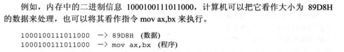
CPU根据什么将内存中的信息看做指令？
CPU将CS:IP指向的内存单元的内容看做指令
如果内存中的某段内容曾被CPU执行过，那么它所在的内存单元必然被CS:IP指向过
7 jmp指令
CPU从何处执行指令是由CS、IP中的内容决定的，我们可以通过改变CS、IP的内容来控制CPU执行目标指令
8086提供了一个mov指令（传送指令），可以用来修改大部分寄存器的值，比如
mov ax,10、mov bx,20、mov cx,30、mov dx,40
但是，mov指令不能用于设置CS、IP的值，8086没有提供这样的功能
8086提供了另外的指令来修改CS、IP的值，这些指令统称为转移指令，最简单的是jmp指令
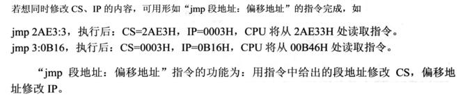
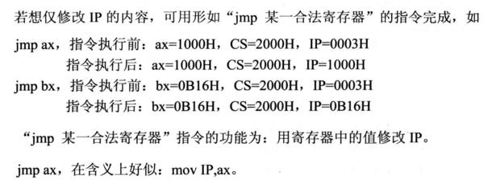
jmp指令 -- 练习

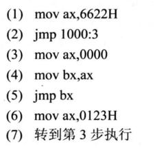

8 代码段


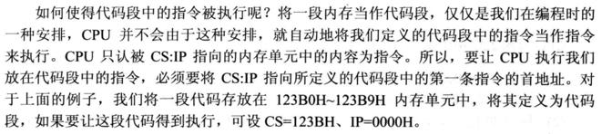